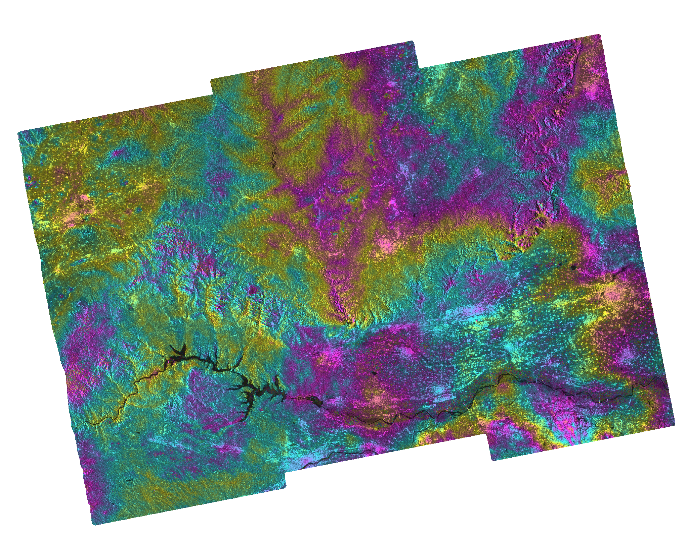
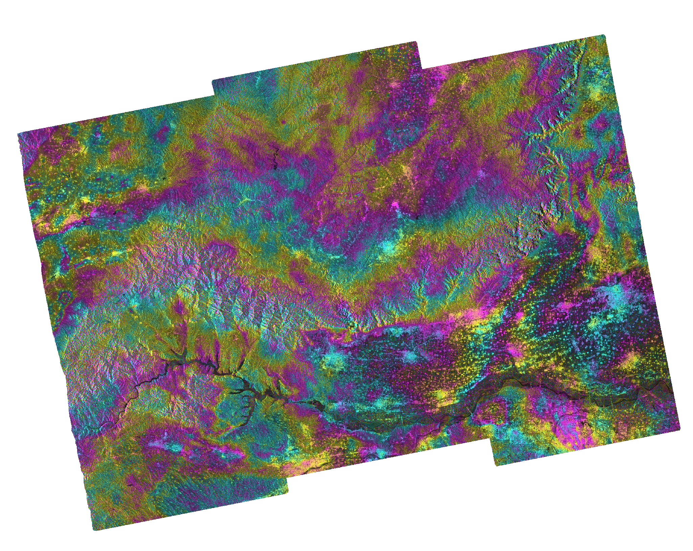
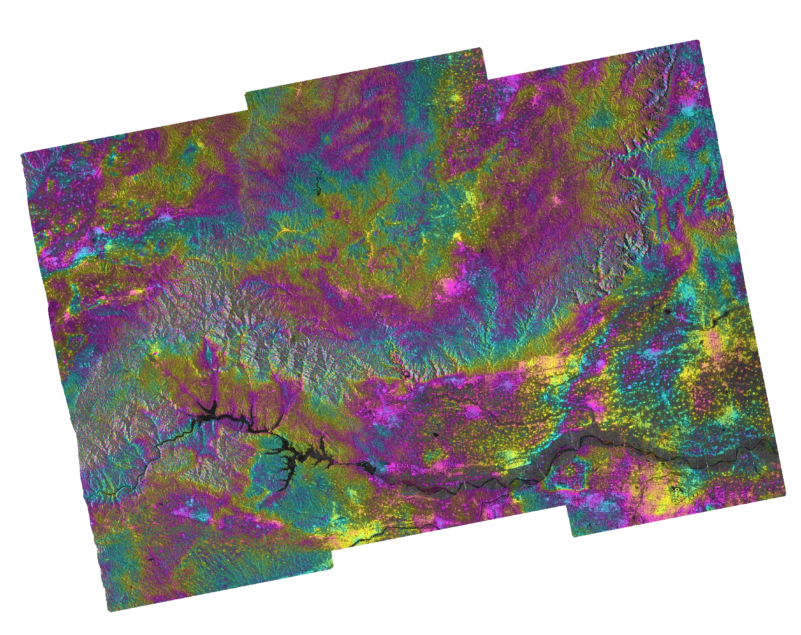

小浪底水电站位于河南省洛阳市与济源市交界处的黄河干流上，是黄河上最大的水利枢纽工程。利用 2025 年春季 3 景 Sentinel-1A 降轨影像，通过 SBAS 时序 InSAR 方法对大坝及库区进行形变监测。



| 干涉对 | 基线 | 垂直形变范围 (mm) | 均值 (mm) | 标准差 (mm) |
|---|---|---|---|---|
| 2025-01-12 → 03-25 | 72 天 | -100.0 ~ +62.3 | -5.4 | 11.8 |
| 2025-03-25 → 05-12 | 48 天 | -66.9 ~ +132.9 | +19.4 | 28.2 |
| 2025-01-12 → 05-12 | 120 天 | -143.6 ~ +53.9 | -21.3 | 25.1 |
坝体及库区在 2025 年 1-5 月期间存在约 -20 mm 的平均沉降趋势。120 天基线干涉图显示最大 -144 mm 的垂向形变。春季为黄河汛前水位调整期，形变信号可能受水位变化和库区沉积物荷载影响。建议增加全年数据获取完整季节性变化规律。
| 参数 | 值 |
|---|---|
| 卫星 | Sentinel-1A |
| 轨道 | 降轨 (~10:29 UTC) |
| 影像数 | 3 景 |
| 干涉对 | 3 对 (SBAS 完全连接) |
| 时间范围 | 2025-01-12 ~ 2025-05-12 |
| 处理方法 | HyP3 INSAR_GAMMA + 垂直形变分析 |
| 分辨率 | 80 m |
| 位置 | 34.92°N, 112.37°E |